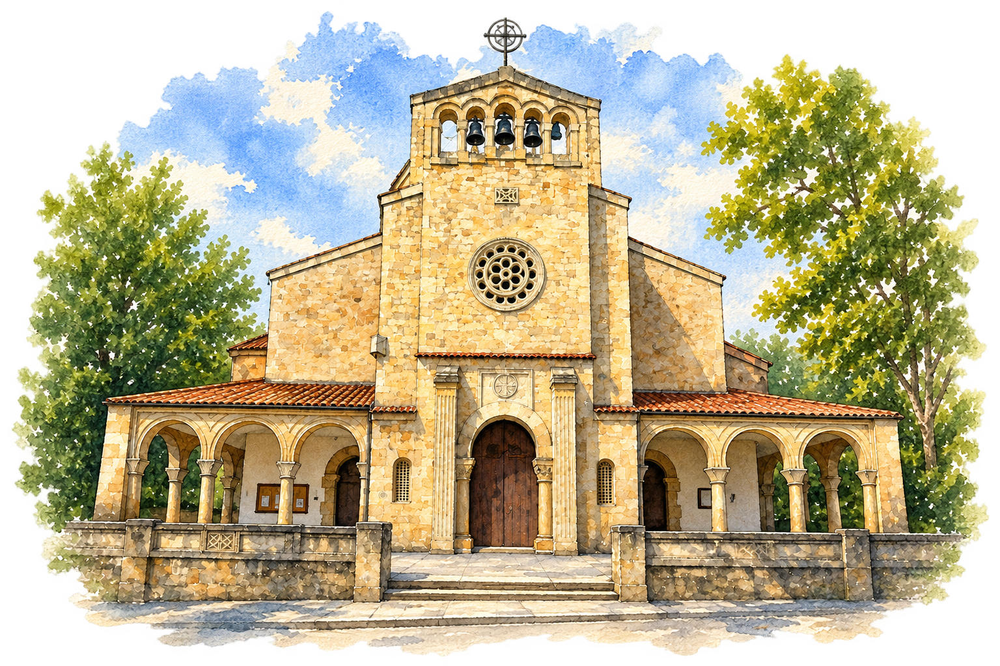
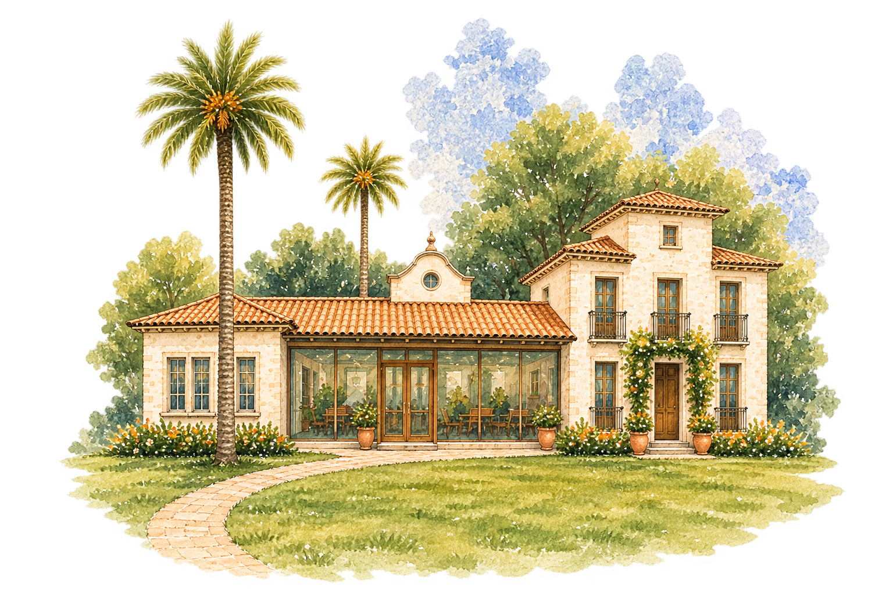

Cris & Pela
Sábado, 24 de julio de 2027
CeremoniaIglesia de San Julián de Somió
CelebraciónLa Quinta del Ynfanzón
Dónde comer
Nuestros favoritos
Cómo llegar y volver
Buses
Queremos que solo tengáis que preocuparos de disfrutar. Organizaremos autobuses para el traslado a la celebración y el regreso a Gijón.
Hacia la celebración
Publicaremos próximamente el punto y la hora de salida.
Regreso a Gijón
Habrá varios horarios de regreso. Podrás indicarnos tu opción en el formulario.
¿Nos acompañas?
Confirma tu asistencia
Nos hará mucha ilusión saber si podremos contar contigo en este día tan especial.
Lo más importante es compartirlo
Lista de boda
Vuestra presencia será nuestro mejor regalo. Para quienes queráis ayudarnos a comenzar esta nueva etapa, muy pronto compartiremos aquí todos los detalles.
Próximamente